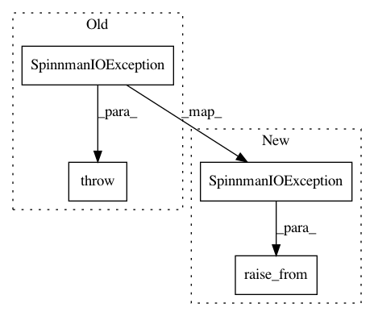

a4b599eb3f9d11bbba417c7e80856d6b66414c80,spynnaker/pyNN/external_devices_models/push_bot/push_bot_ethernet/push_bot_wifi_connection.py,PushBotWIFIConnection,send,#PushBotWIFIConnection#Any#,173
Before Change
try:
self._socket.send(data)
except Exception as e:
raise SpinnmanIOException(str(e))
def close(self):
See\
:py:meth:`spinnman.connections.Connection.close`
After Change
try:
self._socket.send(data)
except Exception as e:
raise_from(SpinnmanIOException(str(e)), e)
def close(self):
See\
:py:meth:`spinnman.connections.Connection.close`
In pattern: SUPERPATTERN
Frequency: 3
Non-data size: 4
Instances
Project Name: SpiNNakerManchester/sPyNNaker
Commit Name: a4b599eb3f9d11bbba417c7e80856d6b66414c80
Time: 2018-03-12
Author: donal.k.fellows@manchester.ac.uk
File Name: spynnaker/pyNN/external_devices_models/push_bot/push_bot_ethernet/push_bot_wifi_connection.py
Class Name: PushBotWIFIConnection
Method Name: send
Project Name: SpiNNakerManchester/sPyNNaker
Commit Name: a4b599eb3f9d11bbba417c7e80856d6b66414c80
Time: 2018-03-12
Author: donal.k.fellows@manchester.ac.uk
File Name: spynnaker/pyNN/external_devices_models/push_bot/push_bot_ethernet/push_bot_wifi_connection.py
Class Name: PushBotWIFIConnection
Method Name: receive
Project Name: SpiNNakerManchester/sPyNNaker
Commit Name: a4b599eb3f9d11bbba417c7e80856d6b66414c80
Time: 2018-03-12
Author: donal.k.fellows@manchester.ac.uk
File Name: spynnaker/pyNN/external_devices_models/push_bot/push_bot_ethernet/push_bot_wifi_connection.py
Class Name: PushBotWIFIConnection
Method Name: __init__